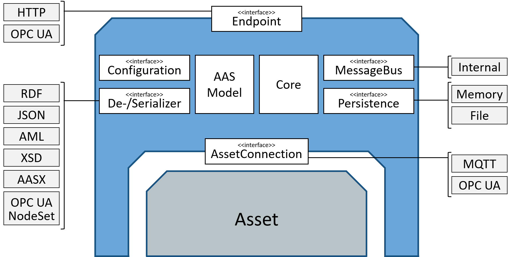

FA³ST Service 


The Fraunhofer Advanced Asset Administration Shell Tools (FA³ST) Service implements the Asset Administration Shell (AAS) specification from the platform Industrie 4.0 and builds an easy-to-use web service based on a custom AAS model instance. If you are not familiar with AAS you can find additional information here.
| FA³ST Service is still under development. Contributions in form of issues and pull requests are highly welcome. |
|---|
Implemented AAS versions | Part | Version | Comment | |:--| -- | -- | | Part 1 - The exchange of information between partners in the value chain of Industrie 4.0 | Version 3.0RC01* | * We are using the AAS model java implementation from admin-shell-io which is based on Version 3.0RC01 but also covers already some aspects from RC02 | | Part 2 – Interoperability at Runtime – Exchanging Information via Application Programming Interfaces | Version 1.0RC02 | |
Getting Started
This is an example of how to set up your project locally. To get a local copy up and running follow these simple example steps. To compile the FA³ST service you need to have a JDK and Maven installed.
Prerequisites
- Java 11+
- Maven
Building from Source
git clone https://github.com/FraunhoferIOSB/FAAAST-Service
cd FAAAST-Service
mvn clean install
Use
From JAR
Download latest version as precompiled JAR
To start the Service from command line use the following commands.
cd /starter/target
java -jar starter-{version}.jar -m {path/to/your/AASEnvironment}
For further information on using the command line see here.
As Maven Dependency
<dependency>
<groupId>de.fraunhofer.iosb.ilt.faaast.service</groupId>
<artifactId>starter</artifactId>
<version>0.1.0</version>
</dependency>
As Gradle Dependency
implementation 'de.fraunhofer.iosb.ilt.faaast.service:starter:0.1.0'
A maven plugin we are using in our build script leads to an error while resolving the dependency tree in gradle. Therefore you need to add following code snippet in your build.gradle. This code snippet removes the classifier of the transitive dependency com.google.inject:guice.
configurations.all {
resolutionStrategy.eachDependency { DependencyResolveDetails details ->
if (details.requested.module.toString() == "com.google.inject:guice") {
details.artifactSelection{
it.selectArtifact(DependencyArtifact.DEFAULT_TYPE, null, null)
}
}
}
}
Example
The following code starts a FA³ST Service with a HTTP endpoint on port 8080.
String pathToYourAASEnvironment = "{pathTo}\\FAAAST-Service\\misc\\examples\\demoAAS.json";
AssetAdministrationShellEnvironment environment = AASEnvironmentHelper.fromFile(new File(pathToYourAASEnvironment));
Service service = new Service(environment,
new ServiceConfig.Builder()
.core(new CoreConfig.Builder()
.requestHandlerThreadPoolSize(2)
.build())
.persistence(new PersistenceInMemoryConfig())
.endpoint(new HttpEndpointConfig())
.messageBus(new MessageBusInternalConfig())
.build());
service.start();
Afterwards, you can reach the running FA³ST Service via http://localhost:8080/shells.
Features
FA³ST Service provides the following functionalities:
- supports several dataformats for the Asset Administration Shell Environment:
json, json-ld, xml, aml, rdf, opcua nodeset - easy configuration via JSON file (see details)
- easily expandable with 3rd party implementations for
endpoint, messagebus, persistence, assetconnection - uses existing open source implementation of AAS datamodel and de-/serializers admin-shell-io java serializer and admin-shell-io java model
- synchronization between multiple endpoints
- connecting to assets using arbitrary communication protocols
Architecture
Fa³ST Service uses an open architecture and defines interfaces for most functionality. This allows for easy extension by 3rd parties. However, FA³ST Service also includes one or more useful default implementations for each interface:
Usage with Command Line
This section provides a short introduction of the most important command line arguments. For more details see the full documentation.
If not already done, follow the step in Building from Source.
- Move to the output folder of the starter
cd starter/target
- Execute the
.jarfile to start a FA³ST Service directly with a default configuration. Replace the{path/to/your/AASEnvironment}with your file to the Asset Administration Shell Environment you want to load with the FA³ST Service. If you just want to play around, you can use a example AASEnvironment from us here.
java -jar starter-{version}.jar -m {path/to/your/AASEnvironment}
Currently we supporting following formats of the Asset Administration Shell Environment model:
json, json-ld, aml, xml, opcua nodeset, rdf
Following command line parameters could be used:
\[<String=String>...\] Additional properties to override values of configuration using
JSONPath notation without starting '$.' (see https://goessner.net/articles/JsonPath/)
-c, --config=<configFile> The config file path. Default Value = config.json
--emptyModel Starts the FA³ST service with an empty Asset Administration Shell Environment.
False by default
--endpoint=<endpoints>\[,<endpoints>...\]
Additional endpoints that should be started.
-h, --help Show this help message and exit.
-m, --model=<modelFile> Asset Administration Shell Environment FilePath.
Default Value = aasenvironment.*
--\[no-\]autoCompleteConfig
Autocompletes the configuration with default
values for required configuration sections. True
by default
--\[no-\]modelValidation Validates the AAS Environment. True by default
-V, --version Print version information and exit.
Usage with Docker
Docker-Compose
Clone this repository, navigate to /misc/docker/ and run this command inside it.
cd misc/docker
docker-compose up
To use your own AAS environment replace the model file /misc/examples/demoAAS.json.
To modify the configuration edit the file /misc/examples/exampleConfiguration.json.
You can also override configuration values using environment variables see details.
Docker CLI
To start the FA³ST service with an empty AAS environment execute this command.
docker run --rm -P fraunhoferiosb/faaast-service '--emptyModel' '--no-modelValidation'
To start the FA³ST service with your own AAS environment, place the JSON-file (in this example demoAAS.json) containing your enviroment in the current directory and modify the command accordingly.
docker run --rm -v ../examples/demoAAS.json:/AASEnv.json -e faaast.model=AASEnv.json -P fraunhoferiosb/faaast-service '--no-modelValidation'
Similarly to the above examples you can pass more arguments to the FA³ST service by using the CLI or a configuration file as provided in the cfg folder (use the faaast.config environment variable for that).
Components
Configuration
This section gives a short introduction how the configuration file works.
The basic structure of a configuration is the following
{
"core" : {
"requestHandlerThreadPoolSize" : [integer]
},
"endpoints" : [
// endpoint configurations, multiple allowed
],
"persistence" : {
// persistence configuration
},
"messageBus" : {
// message bus configuration
},
"assetConnections": [
// asset connection configurations, multiple allowed
]
}
As FA³ST is designed to be easily extendable, the configuration supports to change the used implementation for any of those interfaces without the need to change or recompile the code.
To tell the Service which implementation of an interface to use, each dynamically configurable configuration block contains the @class node specifying the fully qualified name of the implementation class. Each block then contains additionals nodes as defined by the configuration class associated with the implementation class.
For example, the HttpEndpoint defines the property port in its configuration class (HttpEndpointConfig.java#L23).
Therefore, the configuration block for a HttpEndpoint on port 8080 would look like this:
{
"@class" : "de.fraunhofer.iosb.ilt.faaast.service.endpoint.http.HttpEndpoint",
"port" : 8080
}
A simple example configuration could look like this:
{
"core" : {
"requestHandlerThreadPoolSize" : 2
},
"endpoints" : [ {
"@class" : "de.fraunhofer.iosb.ilt.faaast.service.endpoint.http.HttpEndpoint",
"port" : 8080
} ],
"persistence" : {
"@class" : "de.fraunhofer.iosb.ilt.faaast.service.persistence.memory.PersistenceInMemory"
},
"messageBus" : {
"@class" : "de.fraunhofer.iosb.ilt.faaast.service.messagebus.internal.MessageBusInternal"
}
}
Each implementation should provide documentation about supported configuration parameters. When using FA³ST Service from your code instead of running it in standalone mode, you can also create the configuration file manually like this:
ServiceConfig serviceConfig = new ServiceConfig.Builder()
.core(new CoreConfig.Builder()
.requestHandlerThreadPoolSize(2)
.build())
.persistence(new PersistenceInMemoryConfig())
.endpoint(new HttpEndpointConfig())
.messageBus(new MessageBusInternalConfig())
.build());
HTTP Endpoint
This section introduces the HTTP Endpoint implementation. For further details see the full documentation.
The exposed REST API is based on the document Details of the Asset Administration Shell - Part 2, and the OpenAPI documentation DotAAS Part 2 | HTTP/REST | Entire Interface Collection.
HTTP Endpoint configuration supports the following configuration parameters
port(optional, default: 8080)
Example: Get details of a SubmodelElement
HTTP GET http://localhost:8080/submodels/{submodelIdentifier (base64URL-encoded)}/submodel/submodel-elements/{idShortPath}?{optional query parameters}
For a concrete scenario with
- submodelIdentifier: https://acplt.org/Test_Submodel
- idShortPath: ExampleRelationshipElement
and the query-parameters level=deep and content=normal.
HTTP GET http://localhost:8080/submodels/aHR0cHM6Ly9hY3BsdC5vcmcvVGVzdF9TdWJtb2RlbA==/submodel/submodel-elements/ExampleRelationshipElement?level=deep&content=normal
The following interface URLs are currently not (yet) supported
- Submodel Repository Interface (Alternative Interface URLs "Swagger Doc Feb. 2022", DotAAS Part 2 | HTTP/REST | Asset Administration Shell Repository (yet not fully specified))
/shells/{aasIdentifier}/aas/submodels/{submodelIdentifier}/...
- AASX File Server Interface (not yet supported)
/packages
- Asset Administration Shell Serialization Interface (not yet supported)
/serialization (GET)
OPC UA Endpoint
This section introduces the OPC UA Endpoint implementation. For further details see the full documentation.
The OPC UA Endpoint is based on the OPC UA Companion Specification OPC UA for Asset Administration Shell (AAS). The release version of this Companion Specification is based on the document Details of the Asset Administration Shell - Part 1 Version 2.
This implementation is based on Details of the Asset Administration Shell - Part 1 Version 3, which is currently not yet released. Therefore, the current implementation is actually not compatible with the Companion Specification.
The OPC UA Endpoint is built with the Prosys OPC UA SDK for Java. If you want to build the OPC UA Endpoint, you need a valid license for the SDK.
You can purchase a Prosys OPC UA License. As the OPC UA Endpoint is a server, you need a "Client & Server" license.
For evaluation purposes, you also have the possibility to request an evaluation license.
In order to use the OPC UA Endpoint, the configuration settings require to include an OPC UA Endpoint configuration, like the one below:
{
"endpoints": [
{
"@class": "de.fraunhofer.iosb.ilt.faaast.service.endpoint.opcua.OpcUaEndpoint",
"tcpPort" : 4840,
"secondsTillShutdown" : 5
}
]
}
OPC UA Endpoint configuration supports the following configuration parameters
tcpPortis the desired Port for the OPC UA TCP Protocol (opc.tcp). Default is 4840.secondsTillShutdownis the number of seconds the server waits for clients to disconnect when stopping the Endpoint. When the Endpoint is stopped, the server sends a predefined event to all connected clients, that the OPC UA Server is about to shutdown. Now, the OPC UA Server waits the given number of seconds before he stops, to give the clients the possibility to disconnect from the Server. WhensecondsTillShutdownis 0, the Endpoint doesn't wait and stops immediately.
To connect to the OPC UA Endpoint, you need an OPC UA Client. Here are some examples of OPC UA Clients:
Unified Automation UaExpert UaExpert is a free test client for OPC UA. A registration for the website is required.
Prosys OPC UA Browser Free Java-based OPC UA Client. A registration for the website is required.
Official Samples from the OPC Foundation C#-based sample code from the OPC Foundation.
Eclipse Milo Java-based Open Source SDK for Java.
AssetConnections
AssetConnection implementations allows connecting/synchronizing elements of your AAS to/with assets via different protocol. This functionality is further divided into 3 so-called provider, namely
- ValueProvider, supporting reading and writing values from/to the asset, i.e. each time a value is read or written via an endpoint the request is forwarded to the asset
- OperationProvider, supporting the execution of operations, i.e. forwards operation invocation requests to the asset and returning the result value,
- SubscriptionProvider, supporting synchronizing the AAS with pub/sub-based assets, i.e. subscribes to the assets and updates the AAS with new values over time.
An implemented does not have to implement all providers, in fact it is often not possible to implement all of them for a given network protocol as most protocols do not support pull-based and pub/sub mechanisms at the same time (e.g. HTTP, MQTT).
Each provider is connected to exactly one element of the AAS. Each asset connection can have multiples of each provider type. Each FA³ST Service can have multiple asset connections. Accordingly, each asset connection configuration supports at least this minimum structure
{
"@class": "...",
"valueProviders":
{
"{serialized Reference of AAS element}":
{
// value provider configuration
},
...
},
"operationProviders":
{
"{serialized Reference of AAS element}":
{
// operation provider configuration
},
...
},
"subscriptionProviders":
{
"{serialized Reference of AAS element}":
{
// subscription provider configuration
},
...
}
}
A concrete example for OPC UA asset connection could look like this
{
"@class": "de.fraunhofer.iosb.ilt.faaast.service.assetconnection.opcua.OpcUaAssetConnection",
"host": "opc.tcp://localhost:4840",
"valueProviders":
{
"(Submodel)[IRI]urn:aas:id:example:submodel:1,(Property)[ID_SHORT]Property1":
{
"nodeId": "some.node.id.property.1"
},
"(Submodel)[IRI]urn:aas:id:example:submodel:1,(Property)[ID_SHORT]Property2":
{
"nodeId": "some.node.id.property.2"
}
},
"operationProviders":
{
"(Submodel)[IRI]urn:aas:id:example:submodel:1,(Operation)[ID_SHORT]Operation1":
{
"nodeId": "some.node.id.operation.1"
}
},
"subscriptionProviders":
{
"(Submodel)[IRI]urn:aas:id:example:submodel:1,(Property)[ID_SHORT]Property3":
{
"nodeId": "some.node.id.property.3",
"interval": 1000
}
}
}
MQTT AssetConnection
The MQTT asset connection supports the following functionality:
ValueProvider: write values only, read not supportedOperationProvider: not supportedSubscriptionProvider: subscribe to value changes
Configuration Parameters
- on connection level
serverUri: URL of the MQTT serverclientId: id of the MQTT client (optional, default: random)- on ValueProdiver level
topic: MQTT topic to usecontentFormat: JSON|XML (default: JSON, currently, only JSON supported)query: additional information how to format messages sent via MQTT - depends oncontentFormat. For JSON this is a JSON Path expression.- on SubscriptionProdiver level
topic: MQTT topic to usecontentFormat: JSON|XML (default: JSON, currently, only JSON supported)query: additional information how to extract actual value from received messages - depends oncontentFormat. For JSON this is a JSON Path expression.
Example configuration for one of the providers:
{
"topic": "example/myTopic",
"query": "$.property.value",
"contentFormat": "JSON"
}
OPC UA AssetConnection
The OPC UA asset connection supports the following functionality:
ValueProvider: fully supported (read/write)OperationProvider: invoke operations synchroniously, async invocation not supportedSubscriptionProvider: fully supported
Configuration Parameters
- on connection level
host: URL of the OPC UA server. Please be sure that the URL starts withopc.tcp://.- on ValueProdiver level
nodeId: nodeId of the the OPC UA node to read/write- on OperationProdiver level
nodeId: nodeId of the the OPC UA node representing the OPC UA method to invoke- on SubscriptionProdiver level
nodeId: nodeId of the the OPC UA node to subscribe tointerval: subscription interval in ms
Example configuration for a subscription provider:
{
"nodeId": "some.node.id.property",
"interval": 1000
}
Persistence
Each persistence configuration supports at least the following configuration parameters:
initialModel(optional, can be overriden by CLI parameter or environment variable): Path to the AAS Environment model filedecoupleEnvironment(optional, default:true): Only applicable if the AAS Environment is given as Java Object. If set to true, the persistence makes a deep copy of the AAS Environment and decouples the internal AAS Environment from the AAS Environment parsed on startup. If set to false, the same object instance is used in the FA³ST Service, which may have unexpected side effects.
Example of a persistence configuration:
{
"persistence" : {
"@class" : "de.fraunhofer.iosb.ilt.faaast.service.persistence.memory.PersistenceInMemory",
"initialModel" : "{pathTo}/FAAAST-Service/misc/examples/demoAAS.json",
"decoupleEnvironment" : true
}
}
Not yet implemented:
- AASX Packages
- Package Descriptors
- SubmodelElementStructs
In Memory Persistence
The In Memory Persistence implementation keeps the AAS environment model parsed at startup in the local memory. Any change request, such as changing the value of a property, results in a change to the AAS environment model in the local memory. When the FA³ST Service is stopped, the changes to the AAS environment are lost.
The In Memory Persistence has no additional configuration parameters.
File Persistence
The file persistence keeps the entire AAS Environment in a model file which is stored at the local machine. Any change request, such as changing the value of a property, results in a change to the AAS environment model file. Thus, changes are stored permanently.
File Persistence configuration supports the following configuration parameters:
dataDir(optional, default:/): Path under which the model file created by the persistence is to be savedkeepInitial(optional, default:true): If false the model file parsed on startup will be overriden with changes. If true a copy of the model file will be created by the persistence which keeps the changes.dataformat(optional, default: same data format as input file): Determines the data format of the created file by file persistence. Ignored if thekeepInitialparameter is set to false. Supported data formats areJSON,XML,AML,RDF,AASX,JSONLD,UANODESET.
Example configuration for the file persistence:
{
"persistence" : {
"@class" : "de.fraunhofer.iosb.ilt.faaast.service.persistence.file.PersistenceFile",
"initialModel" : "{pathTo}/FAAAST-Service/misc/examples/demoAAS.json",
"dataDir": ".",
"keepInitial": true,
"dataformat": "XML"
}
}
About the Project
The Reference Architecture of Industrie 4.0 (RAMI) presents the Asset Administration Shell (AAS) as the basis for interoperability. AAS is the digital representation of an asset that is able to provide information about this asset, i.e. information about properties, functionality, parameters, documentation, etc.. The AAS operates as Digital Twin of the asset it represents. Furthermore, the AAS covers all stages of the lifecycle of an asset starting in the development phase, reaching the most importance in the operation phase and finally delivering valuable information for the decline/decomposition phase.
To guarantee the interoperability of assets Industie 4.0 defines an information metamodel for the AAS covering all important aspects as type/instance concept, events, redefined data specification templates, security aspects, mapping of data formats and many more. Moreover interfaces and operations for a registry, a repository, publish and discovery are specified. At first glance the evolving specification of the AAS seems pretty complex and a challenging task for asset providers. To make things easier to FA³ST provides an implementation of several tools to allow easy and fast creation and management of AAS-compliant Digital Twins.
Recommended Documents/Links
Asset Administration Shell Specifications
Quicklinks To Different Versions & Reading GuideDetails of the Asset Administration Shell - Part 1, Nov 2021
The publication states how companies can use the Asset Administration Shell to compile and structure information. In this way all information can be shared as a package (set of files) with partners at several levels of the value chain. It is not necessary to provide online access to this data from the very beginning.Details of the Asset Administration Shell - Part 2, Nov 2021
This part extends Part 1 and defines how information provided in the Asset Administration Shell (AAS) (e.g. submodels or properties) can be accessed dynamically via Application Programming Interfaces (APIs).OPC UA Companion Specification OPC UA for Asset Administration Shell (AAS)
Roadmap
Next milestone is to publish a first 1.0.0 release to Maven Central and DockerHub. Some of the features we are working on include
- improve stability/robustness
- improve usability
- implement a file & database persistence in FA³ST Service
- implement the AASX Server interface
- implement the Asset Administration Shell Serialization interface
Contributing
Contributions are what make the open source community such an amazing place to learn, inspire, and create. Any contributions are greatly appreciated.
If you have a suggestion for improvements, please fork the repo and create a pull request. You can also simply open an issue. Don't forget to rate the project! Thanks again!
- Fork the Project
- Create your Feature Branch (
git checkout -b feature/AmazingFeature) - Commit your Changes (
git commit -m 'Add some AmazingFeature') - Push to the Branch (
git push origin feature/AmazingFeature) - Open a Pull Request
Code Formatting
The project uses spotless:check in the build cycle, which means the project only compiles if all code, *.pom and *.xml files are formatted according to the project's codestyle definitions (see details on spotless). You can automatically format your code by running
mvn spotless:apply
Additionally, you can import the eclipse formatting rules defined in /codestyle into our IDE.
Third Party License
If you use additional dependencies please be sure that the licenses of these dependencies are compliant with our License. If you are not sure which license your dependencies have, you can run
mvn license:aggregate-third-party-report
and check the generated report in the directory documentation/third_party_licenses_report.html.
Contributors
| Name | Github Account |
|---|---|
| Michael Jacoby | mjacoby |
| Jens Müller | JensMueller2709 |
| Klaus Schick | schick64 |
| Tino Bischoff | tbischoff2 |
| Friedrich Volz | fvolz |
Contact
faaast@iosb.fraunhofer.de
License
Distributed under the Apache 2.0 License. See LICENSE for more information.
Copyright (C) 2022 Fraunhofer Institut IOSB, Fraunhoferstr. 1, D 76131 Karlsruhe, Germany.
You should have received a copy of the Apache 2.0 License along with this program. If not, see https://www.apache.org/licenses/LICENSE-2.0.html.